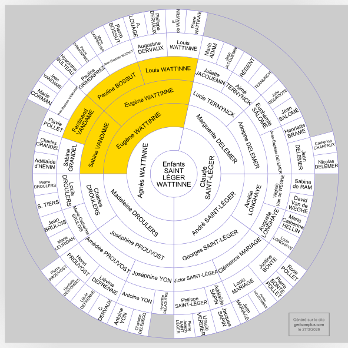
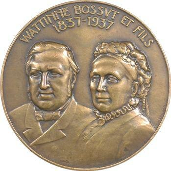
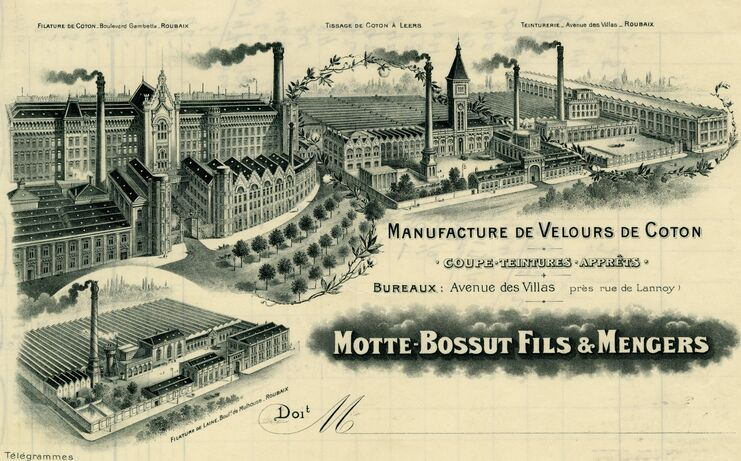
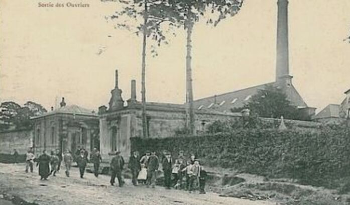
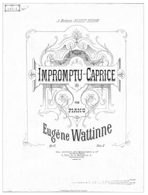
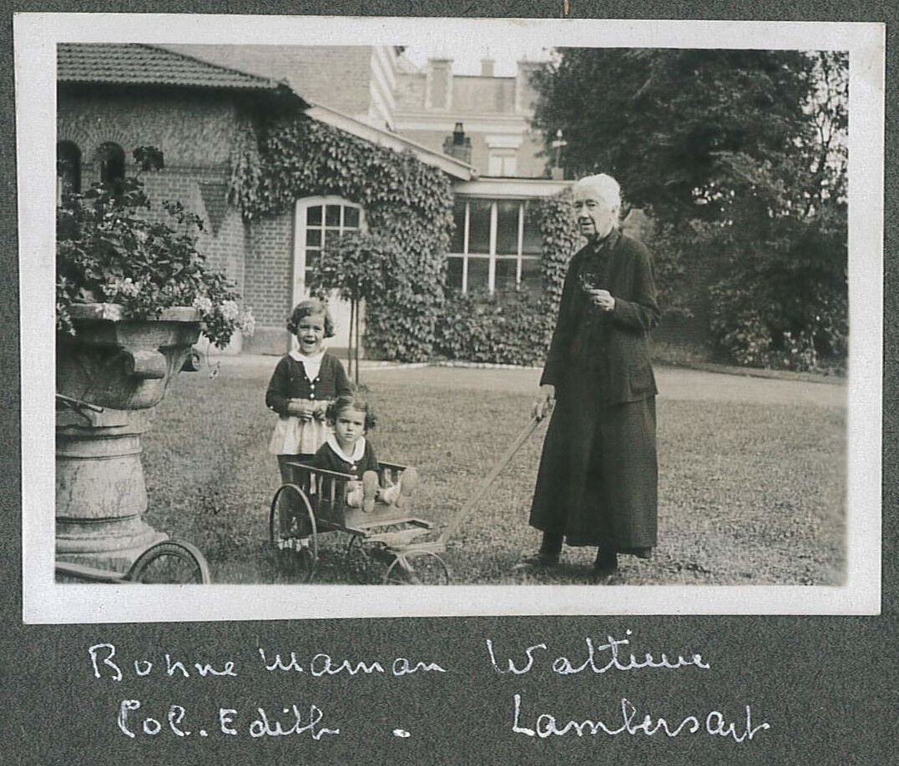
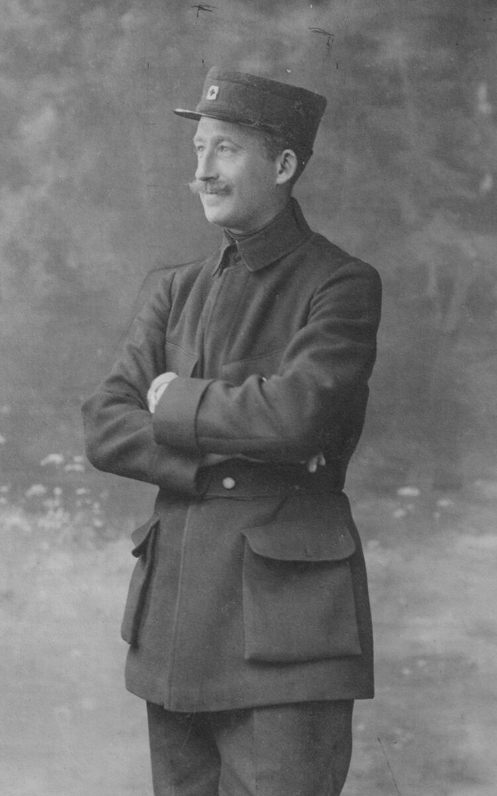
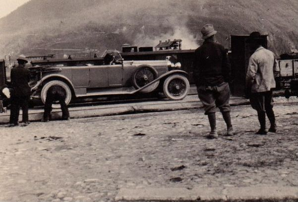
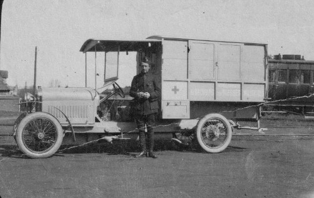
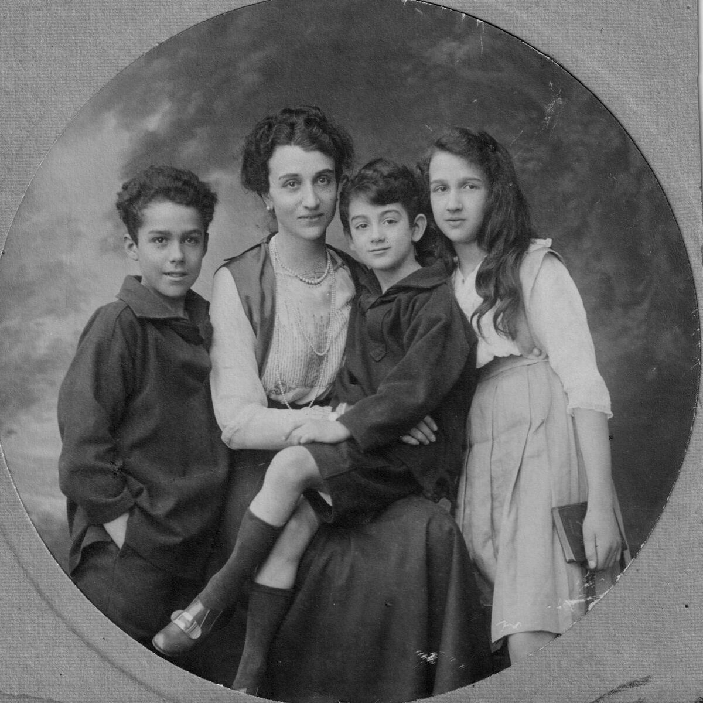

Louis Wattinne et Pauline Bossut — Une famille entre laine et coton (1837–1929)
Louis Wattinne et Pauline Bossut — Une famille entre laine et coton (1837–1929)
Rédigé par Arnaud Saint-Léger en 2026 sur la base des sources indiquées en bas de page.

Une union fondatrice
Le 23 avril 1837, Louis Joseph Wattinne et Pauline Catherine Hyacinthe Bossut se marient à Roubaix. Lui a vingt-sept ans, elle en a dix-huit. L'article précédent a raconté d'où ils viennent : lui d'une vieille famille tourquennoise de maçons et de négociants en laine, elle de la maison Bossut, l'une des plus respectées de Roubaix, fondée par son grand-père et portée à son apogée par son père Jean-Baptiste Bossut, commissionnaire et futur maire. C'est le mariage qui unit deux villes, deux savoir-faire, deux réseaux.
De leur union naissent sept enfants entre 1838 et 1852. Ils s'installent au 20 rue du Château, à Roubaix — une adresse qui dit tout : le négoce de laines Wattinne-Bossut & Fils occupe le 22-24 et le 30-32 de la même rue. La maison et l'entreprise sont littéralement côte à côte. En quelques années, Louis va transformer cet héritage familial en quelque chose de bien plus grand.
De cette famille de sept enfants, deux branches vont traverser le temps et laisser des descendants jusqu'à nous. D'un côté, la branche de Gustave, l'aîné, qui mène au haras de Blingel et à Marianne Wattinne. De l'autre, la branche d'Eugène, le cadet, dont la vie brisée à vingt-sept ans mène pourtant, par son fils, à Agnès Wattinne — ma grand-mère.

Mais avant de raconter ces deux destins, il faut d'abord raconter Louis lui-même, et ce qu'il a bâti.
Louis à l'œuvre — Trois affaires, une fortune
Le négoce de laines Wattinne-Bossut & Fils
Louis Wattinne n'est pas seulement un héritier : il est un bâtisseur. Son affaire principale est le négoce de laines Wattinne-Bossut & Fils, dont les bureaux occupent la rue du Château à Roubaix. Ce commerce n'est pas local. Il rayonne jusqu'en Argentine, en Uruguay, en Afrique du Sud, en Australie et en Nouvelle-Zélande, dans tous les pays où l'on produit de la laine de qualité. Louis Wattinne fait partie de ces industriels du Nord qui pensent à l'échelle du monde sans jamais quitter Roubaix. Le négoce Wattinne-Bossut sera l'un des plus importants du genre jusqu'à sa fermeture en 1970 — plus d'un siècle après sa fondation.

Motte-Bossut et Cie — La « filature monstre »
En 1843, Louis Wattinne s'associe avec son beau-frère Louis Motte — qui venait d'épouser la sœur de Pauline, Adèle Bossut en 1841, et porte désormais le nom de Louis Motte-Bossut — et avec Cavrois-Grimonprez, oncle de sa femme, pour fonder une filature de coton au bord du canal de Roubaix. Chacun apporte un tiers des fonds. La société est constituée le 26 janvier 1843 sous la raison sociale Motte-Bossut et Cie.
« Le 26 janvier 1843, était constituée en sous-seing privé une association pour l'exploitation d'une filature de coton entre MM. Cavrois-Grimonprez, Wattinne-Bossut et Motte-Bossut. La mise totale de la société était de 600 000 Francs-Or, somme considérable pour l'époque, fournie par tiers par chacun des associés. »
Louis Motte fait d'abord commander 18 000 broches en Angleterre — les toutes dernières machines self-acting mules de chez Sharps & Roberts, bien plus performantes que les vieilles mule-jenny françaises. L'usine qui sort de terre est si démesurée que les Roubaisiens la surnomment spontanément la filature monstre. Avec ses 52 000 broches en 1853 et plus de 500 ouvriers, c'est la plus grande filature de coton de France. La société Motte-Bossut et Cie est dissoute le 8 novembre 1867 après l'incendie qui détruit entièrement le bâtiment en juillet 1866. Les sociétés successives garderont le nom Motte-Bossut et le bâtiment qui leur succède — toujours visible à Roubaix, boulevard Leclerc — sera classé Monument Historique en 1978.

La filature d'Auchy-lès-Hesdin
En 1859, Louis Wattinne fait un pari audacieux. Dans la vallée de la Ternoise, à une centaine de kilomètres de Roubaix, une filature de coton est mise en vente : celle d'Auchy-lès-Hesdin. L'affaire a une histoire chargée — elle a connu trois propriétaires successifs depuis sa fondation en 1805, dont le célèbre économiste Jean-Baptiste Say lui-même, qui y avait installé l'une des premières machines hydrauliques de tout le nord de la France. Elle a aussi subi un incendie dévastateur en 1834 et une crise du coton qui a fragilisé son dernier propriétaire, la famille Grivel.
Ce vaste patrimoine — la filature elle-même, des logements ouvriers, des bois, des terres, et deux retorderies dans les villages voisins de Blingel et Grigny — est racheté à parts égales par Louis Wattinne, Auguste Droulers et Benoît Prouvost-Charlet. En moins de dix ans, Louis rachète les parts de ses associés l'un après l'autre. En 1870, la filature est entièrement à lui : elle s'appellera désormais la filature Wattinne-Bossut. Elle restera dans la famille pendant cent trente ans, jusqu'à la fermeture définitive en juin 1989.
Pourquoi Auchy ? La Ternoise y forme une chute d'eau de 4,20 mètres — la plus haute du Pas-de-Calais. Jean-Baptiste Say l'avait lui-même remarquée et y avait installé en 1807 un moteur hydraulique capable de faire tourner des métiers à 60 ou 90 mètres du point d'eau. Les Wattinne, qui avaient la prudence des bons gestionnaires, appréciaient cette source d'énergie naturelle à une époque où le charbon devenait de plus en plus cher.
Mais Louis ne sera pas longtemps aux commandes. La même année où s'achève l'acquisition de la filature, il meurt à Paris, le 26 décembre 1867, à cinquante-sept ans. Il laisse une maison de négoce florissante, une filature en plein développement, et une veuve, Pauline Bossut, qui lui survivra trente-cinq ans.

Un homme public
Louis Wattinne n'est pas seulement un industriel. Il est aussi un homme engagé dans la vie de sa profession et de sa cité. En 1865, il est choisi par ses collègues — cent manufacturiers de Roubaix et Tourcoing — pour se rendre à Paris et présenter au gouvernement les inquiétudes de l'industrie textile régionale face au Traité de libre-échange signé avec l'Angleterre en 1860.
Le Traité de libre-échange de 1860 (dit traité Cobden-Chevalier) est l'une des grandes décisions économiques du Second Empire. En supprimant les droits de douane sur les produits anglais, Napoléon III expose l'industrie textile française à la concurrence directe des usines britanniques, qui sont alors plus mécanisées et produisent à moindre coût. Pour les filateurs du Nord, c'est une menace existentielle. Simultanément, la Guerre de Sécession américaine (1861–1865) coupe les approvisionnements en coton des États-Unis, faisant monter les prix et forçant les filatures à chercher leur matière première jusqu'en Égypte, en Inde ou en Russie. Le nombre de filatures dans le Nord passe de 43 à 26 — mais celles qui survivent, plus grandes et mieux outillées, deviennent des géants.
Louis devient en 1865 vice-président de la Chambre Consultative des Arts et Manufactures de Roubaix, poste qu'il conserve jusqu'à sa mort. Selon le livret d'Auchy, il aurait été fait chevalier de la Légion d'honneur — cette mention reste à vérifier sur la base Léonore. Son portrait peint restera longtemps suspendu dans le Château Blanc d'Auchy-lès-Hesdin — la maison de maître de la filature — avant d'être racheté en 2008 par un membre de la famille.
Pauline, la survivante
Pauline Bossut, elle, traverse le siècle. Mariée en 1837 à dix-huit ans, elle voit mourir son mari en 1867, puis son fils Eugène en 1876, puis son fils Gustave en 1896. Elle administre et veille sur l'héritage familial avec une constance silencieuse dont on perçoit l'ampleur à travers la chronique du livret d'Auchy — c'est elle qui tient les rênes de la filature après Louis, avant que son fils Gustave ne prenne le relais. Elle mourra à Roubaix en 1902, à quatre-vingt-trois ans. Son portrait, comme celui de son mari, habitait les murs du Château Blanc.
La branche Gustave — Les chevaux, Blingel et le turf
Gustave Louis Paul, le fils aîné (1838–1896)
Gustave Louis Paul Wattinne est le premier enfant de Louis et Pauline, né le 10 mars 1838 à Roubaix. C'est lui qui reprend la direction de la filature d'Auchy après la mort de son père Louis, puis après Pauline sa mère, associé dans la firme Wattinne-Bossut & Fils. Le Château Blanc d'Auchy est sa résidence d'été. Il épouse Marie-Laure Dufour (1838–1883), dont il a cinq enfants, parmi lesquels Gustave Louis René, né en 1863, et Georges Louis Paul, né en 1869. Ce dernier sera le dernier directeur Wattinne à résider au Château Blanc d'Auchy, dont son fils Albert sera le tout dernier patron. Gustave meurt en août 1896 à Bondues.

C'est son fils Gustave Louis René qui va transformer le domaine de Blingel en quelque chose d'inattendu.
Gustave Louis René — Le gentleman farmer de Blingel (1863–1929)
Gustave Louis René Wattinne naît le 7 avril 1863 à Roubaix. Il est associé dans la firme familiale Wattinne-Bossut & Fils, il est copropriétaire de la filature d'Auchy, il siège dans les conseils qui comptent — bref, il est un héritier sérieux de la grande industrie nordiste. Mais ce qui le passionne vraiment, ce sont les chevaux.
Ses étés, il les passe à Auchy, dans une grande maison du parc de la filature qu'on surnomme familièrement la Smalah — le nom dit tout : une maison bondée de monde, de famille, de personnel, une sorte de campement joyeux de soixante-dix fenêtres niché dans un parc de six hectares traversé par la Ternoise. À quelques kilomètres de là, dans la vallée, il possède aussi une propriété à Blingel — un hameau discret, au bord de la même rivière, où les Wattinne ont hérité d'une retorderie depuis le rachat de la filature en 1859.

C'est là qu'il décide de créer, en 1912, un haras.
Le haras de Blingel — Un rêve de gentleman farmer
Pour qui imagine un haras comme quelques boxes et un pré, le haras de Blingel est une surprise. Marianne Wattinne, arrière-petite-fille de Gustave, en a dressé le portrait dans ses souvenirs écrits en 2014 :
« L'ancêtre avait vu les choses en grand ! Pas moins de 60 boxes, avec des boxes d'isolement au bout d'une piste d'entraînement, de nombreux hectares de pâtures, une étalonnerie, une baignoire de thalasso pour les chevaux approvisionnée en eau par la rivière La Ternoise, une petite usine de production d'électricité, une aviculture ainsi qu'un moulin à Rollancourt. »

Le tout est construit dans un style néo-normand — Gustave, qui n'est pas en Normandie mais veut quand même y être — avec des girouettes en fer forgé sur chaque pâture, chacune numérotée et ornée d'une silhouette différente. Ces girouettes sont l'œuvre de Jean Joire, sculpteur animalier réputé et cousin de Gustave par alliance — il a épousé sa cousine Germaine Wattinne. Joire est de ces artistes que la fortune familiale a préservé du besoin de vendre : fils de banquier, il n'a jamais eu à se soucier du marché de l'art. Ses sculptures animalières, d'une qualité rare, sont restées largement confidentielles de son vivant.


Gustave ne se contente pas d'élever des chevaux. Il les fait courir. Ses premières couleurs — casaque cerise, toque bleue — apparaissent d'abord sous le nom de son ami Albert Jacquemin, avant que Gustave ne les revendique ouvertement. Ses chevaux remportent des succès à Auteuil : Vertige, Corton II, Palestine, Marmouset, Saint Paul, Opott — deuxième du Grand Prix de Paris — puis Embry, troisième du Jockey-Club. Il est l'un des fondateurs du champ de courses du Touquet, cette station balnéaire chic de la Côte d'Opale qui attire le gotha de l'entre-deux-guerres.
Le premier grand vainqueur élevé à Blingel est Marmouset, en 1914. Mais le triomphe absolu arrive en 1929, l'année même de la mort de Gustave. Son cheval Le Touquet remporte le Grand Steeple-Chase de Paris à Auteuil. Gustave rentre aux balances — le rituel de pesée du jockey après la course — pour la dernière fois. Il meurt quelques semaines plus tard, le 5 décembre 1929, à Auchy-lès-Hesdin, à soixante-six ans.

La nécrologie publiée dans la presse hippique de l'époque dit de lui qu'il était
« ce charmant homme qui fut un fervent du cheval » et dont « on aimait à voir triompher les couleurs » — « de ceux que l'on voudrait voir très nombreux dans l'enclosure et dont on se souvient avec émotion. »
René et le haras après Gustave
Gustave laisse le haras à ses fils René et Roger. René Wattinne — né en 1893, engagé volontaire dès septembre 1913 au 6e Chasseurs à Cheval, blessé en 1917 par éclat de mitraille, titulaire de la Croix de guerre 1914–1918 et chevalier de la Légion d'honneur (décret du 30 juin 1939) — est déjà passionné d'élevage depuis l'adolescence. Depuis les tranchées, il recevait les revues Jockey et Paris-Sport et demandait des nouvelles du haras dans ses lettres à son père. C'est dire que Blingel n'est pas pour lui un héritage subi, mais une vocation. Sa carrière militaire dans la réserve restera d'ailleurs toujours en lien avec les chevaux : en 1937, il est capitaine de réserve affecté au Service des Remontes de la 1re Région.
L'Occupation est une épreuve. Les Allemands réquisitionnent le haras, pillent la cave à vin, confinent la famille dans les communs. René gardera toute sa vie « la haine de l'envahisseur teuton », écrit Marianne Wattinne. Après la guerre, il reprend les rênes avec passion, et c'est lui que ses petits-enfants voient encore à cheval — « cavalier émérite, il a fait la guerre 14 à cheval ».
C'est à René que Blingel doit son âge d'or mémoriel : les années 1960 et 1970, quand les cousins débarquent en vélo le long de la Ternoise depuis Auchy, quand les soirées de pêche à la truite sont « miraculeuses », quand les enfants se faufilent dans la graineterie pour plonger leurs mains dans l'avoine. La grande maison du haras, les girouettes de Jean Joire, la balançoire verte à bascule qui « a servi à toutes les générations de cousins » — tout cela forme un monde que Marianne Wattinne, petite-fille de René, a voulu mettre par écrit en 2014 pour ses enfants.
La branche Eugène — Un destin brisé, une lignée qui continue
Eugène Henri Joseph — Le musicien d'Auchy (1849–1876)
Eugène Henri Joseph Wattinne naît le 4 juin 1849 à Roubaix, cinquième enfant de Louis et Pauline — onze ans après son frère aîné Gustave. Il grandit dans une famille déjà établie, déjà riche, déjà respectée.
Ce qu'on sait d'Eugène, on le doit à sa petite-fille Agnès, qui en a brossé un portrait d'une précision attendrie. Eugène parle le russe — il a séjourné à Moscou, sans doute pour les affaires de la laine, peut-être aussi par goût du voyage et du monde. Il est musicien : il compose des œuvres éditées à Paris, dédicacées à des amies et des cousines. Il est mondain, très invité, « assez gai » selon les mots d'Agnès. Ce portrait d'un homme cultivé, cosmopolite et sociable contraste avec la raideur qu'on imaginerait volontiers aux grands industriels du Nord.

Il s'installe à Auchy pour diriger la filature familiale. C'est là qu'il épouse Sabine Vandame (1851–1939), fille d'une famille lilloise. Sa grand-mère Agnès le décrit comme « très musicien » — et Sabine, elle, comme « très jolie mais peu coquette ». On imagine ce couple dissemblable dans la grande maison d'Auchy : lui brillant et mondain, elle simple et discrète. Ils ont deux enfants : Germaine, née vers 1874, et Eugène Joseph Gustave, né en octobre 1875.
Il est mort pour une robe
Le 4 juin 1876, Eugène Wattinne a vingt-sept ans. C'est son anniversaire. Il ne le sait pas encore, mais ce sera aussi le dernier jour de sa vie.
Devant l'insistance de son mari pour qu'elle soit mieux habillée, Sabine Vandame a fini par commander une robe de soirée. La robe est arrivée à la gare d'Auchy-lès-Hesdin. Eugène se met à cheval pour aller la chercher. Au moment où une locomotive siffle à l'entrée de la gare, le cheval s'effraie, se cabre, et Eugène tombe. Il mourra de cet accident.
Sa fille avait environ deux ans. Son fils Eugène Joseph Gustave avait six mois.
Sabine Vandame ne se remariera jamais. Elle survivra à son mari de soixante-trois ans, mourant à Bernay en 1939, à quatre-vingt-huit ans. Et elle répétera toute sa vie, à ses enfants, à ses petits-enfants, la même phrase :
« Il est mort pour une robe. »
Cinq mots. Une vie entière dedans.

Eugène Joseph Gustave — L'héritier orphelin (1875–1927)
Eugène Joseph Gustave Wattinne naît le 31 octobre 1875 à Roubaix. Son père meurt six mois plus tard. Il grandit donc sans père, élevé par Sabine Vandame. Sa mère ne parvient pas à l'installer à la tête de la filature d'Auchy, qui passe aux mains de la branche Gustave. Il aurait voulu faire des études de médecine. Sa mère s'y oppose.
Il s'inscrit finalement dans le monde industriel de Roubaix par ses propres moyens, en développant une affaire de rideaux en tulle et voile brodés à la machine — un créneau délicat, entre dentelle et industrie, qui demande autant de goût que de sens des affaires. Il devient président du Tribunal de commerce de Roubaix.

La Fraternelle — Un humaniste en guerre
Quand la guerre éclate en 1914, Eugène Wattinne est réformé pour cause d'arthrite chronique du genou. Mais il ne reste pas inactif. En 1915, il fait carrosser sa propre Hispano-Suiza en ambulance et s'engage comme conducteur de convoi sanitaire, allant chercher les blessés au front pour les ramener dans les hôpitaux de l'arrière. Il abandonnera cette mission dix-huit mois plus tard, contraint par la maladie.


Puis il déploie une action humanitaire civile d'une ampleur remarquable, organisée en trois volets.
La Fraternelle : face à l'occupation allemande du Nord de la France, des dizaines de milliers de civils sont retenus en territoire ennemi ou bloqués en Suisse. Eugène crée cette association pour négocier leur libération, traitant directement avec la Croix-Rouge de Francfort au nom du gouvernement français. Il obtient le retour de 100 pères de famille prisonniers et de 574 enfants.
Le Bon Accueil : à mesure que les rapatriés arrivent à Paris, il faut les accueillir, les orienter, les nourrir et les loger. Eugène crée un service de réception à la gare de Lyon, puis développe cette structure permanente d'accueil qui prend en charge près de 250 000 rapatriés et évacués.
Hautefeuille : à Saint-Martin-sur-Ouanne dans l'Yonne, pour les plus fragiles — vieillards malades, grands invalides — qui ne peuvent rentrer directement chez eux. Pour le compte du ministère de l'Intérieur, Eugène crée et administre cette maison de convalescence qui leur offre soins et hébergement avant leur retour définitif.
C'est pour cet ensemble d'actions que la Légion d'honneur lui est décernée en 1920, « pour création de la Fraternelle des Régions Occupées ».
Madeleine Droulers — Une alliance au sommet
En 1902, Eugène Joseph Gustave épouse Madeleine Droulers (1883–1974), fille de Charles Henri Joseph Droulers et de Joséphine Prouvost. Ce mariage réunit, en une seule table familiale, trois des grandes dynasties textiles du Nord : les Wattinne-Bossut, les Droulers et les Prouvost. Madeleine est en effet la petite-fille d'Amédée Prouvost, fondateur du Peignage Amédée Prouvost — l'un des fleurons de l'industrie lainière de Roubaix.
Ensemble, ils construisent une vie à plusieurs étages : Roubaix l'hiver, la villa Sans Souci à Hardelot — construite en 1910 sur la côte d'Opale — pour les séjours balnéaires, et en été le château du Biez à Pecq, en Belgique, sur l'Escaut.
Le château du Biez avait été acheté par le beau père d'Eugène, Charles Droulers, qui avait fait construire la partie gauche — la seule qui subsiste encore aujourd'hui avec la tour. Sans électricité ni eau courante à l'origine, on s'y éclairait aux lampes à acétylène et aux bougies. Pendant la guerre de 1914–1918, le château fut occupé par les Allemands et transformé en caserne : tous les arbres de l'avenue furent coupés, un obus tomba dans la cour et ébranla sérieusement les toitures. Eugène le fit reconstruire après la guerre. C'est dans la tour du château que Francis installera plus tard son atelier de menuiserie, et que les enfants apprendront à tirer des brochets à la carabine depuis le pont.

De leur union naissent trois enfants : Eugène Jean-Marie en 1903, Agnès en 1904, et Francis en 1908.
Eugène meurt le 8 décembre 1927 à Pecq, d'un cancer du foie contracté en septembre — emporté en trois mois. Il avait cinquante-deux ans. Ses enfants Eugène, Agnès et Francis ont vingt-quatre, vingt-trois et dix-neuf ans.
Les enfants d'Eugène — Une génération entre deux guerres
Les trois enfants d'Eugène et Madeleine grandissent dans l'aisance et l'insouciance des années 1920, entre Roubaix, Pecq et Hardelot. Agnès les a décrits dans ses souvenirs avec une tendresse précise.

Eugène Jean-Marie, le frère aîné, est passionné de vitesse. À dix-huit ans, il possède déjà une Bugatti spécialement carrossée pour lui. Il fera carrière aux Grands Moulins de Paris avant de s'engager comme aviateur de chasse en 1939. Francis, le cadet, est champion de natation. Dans la tour du château du Biez, il s'est aménagé un atelier de menuiserie où il fabrique, selon les mots d'Agnès, « quelques meubles très jolis ». Cette image d'un homme à la fois sportif et artisan, habile de ses mains, contraste avec la mort absurde qui le frappe en 1944 : alors qu'il nage au large de Bandol, il est terrassé par un malaise cardiaque. Être champion de natation et mourir noyé — l'ironie tragique de cette fin n'a pas échappé à Agnès.
Agnès — La voix de la famille (1904–1993)
Agnès Sabine Madeleine Marie Wattinne naît le 4 juin 1904 à Lille. Elle grandit à la confluence de toutes les dynasties que cet article a tenté de raconter : les Wattinne-Bossut par son père, les Droulers et les Prouvost par sa mère. Elle porte en elle, sans forcément le savoir, l'héritage de quatre générations d'industriels du textile nordiste.
Le 24 juin 1923, à dix-neuf ans, elle épouse Claude Saint-Léger. Ce mariage donne naissance à notre branche.
Elle survivra à son mari, à ses deux frères, à la guerre, à la fin du monde textile qui avait fait la fortune des siens. Elle mourra à Lille le 12 décembre 1993, à quatre-vingt-neuf ans — presque le même âge que sa bisaïeule Pauline Bossut, qui avait elle aussi traversé un siècle entier.
C'est elle qui a écrit, pour ses petits-enfants, les portraits des siens — son grand-père Eugène mort pour une robe, son père l'humaniste en ambulance Hispano, ses frères la Bugatti et le champion de natation. Elle a transmis les voix, les détails, les phrases qui restent. Sans elle, il ne resterait que des dates.
Deux branches, une convergence
Ce qui est frappant, quand on regarde les deux branches ensemble, c'est qu'elles n'ont jamais vraiment perdu le fil l'une de l'autre. Elles ont vécu leur vie propre — les chevaux et le turf d'un côté, les rideaux en tulle et l'humanitaire de l'autre — mais elles se retrouvent toujours au même endroit : Auchy-lès-Hesdin, et la vallée de la Ternoise.
Gustave Louis René et ses fils passent leurs étés à la Smalah, dans le parc de la filature. Blingel, le haras, est à quelques kilomètres en amont sur la même rivière. Les cousins des deux branches se croisent à Auchy, pêchent la truite, jouent dans les mêmes jardins. Marianne Wattinne le raconte avec un sourire : les cousins de Blingel arrivaient en vélo à Auchy « en passant par la propriété du haras le long de la rivière, puis passage à Rollancourt et le long du marais ».
Mais les deux branches se rejoignent aussi, bien plus concrètement, par le mariage. Marianne Wattinne — petite-fille de René, arrière-petite-fille de Gustave Louis René, issue de la branche Gustave — épouse Christophe Obry, petit-fils d'Agnès Wattinne, issue de la branche Eugène. Les deux fils de Louis et Pauline, séparés par onze ans et par des destins très différents, voient ainsi leurs descendances se rejoindre, un siècle plus tard, au bord de la même Ternoise.